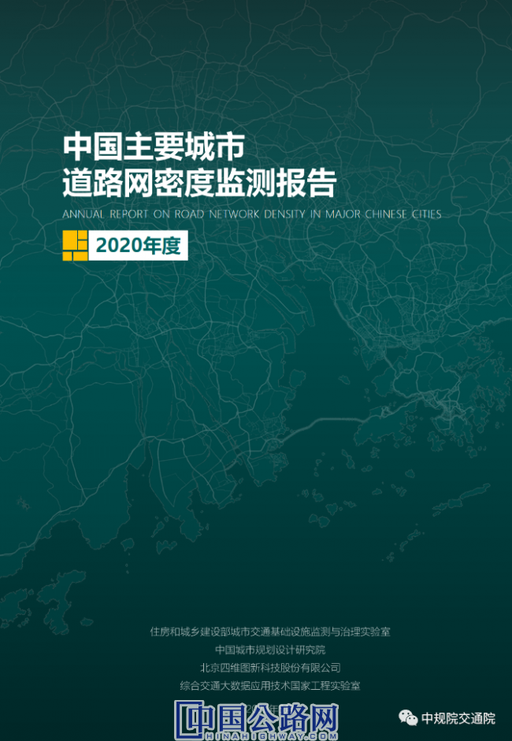
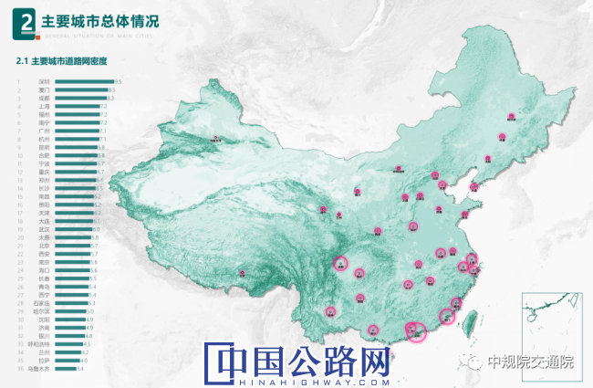
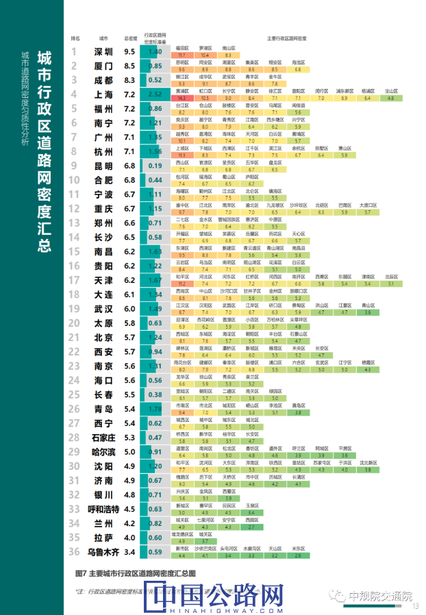
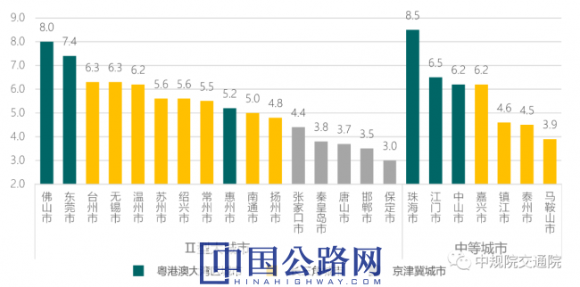

微官网
微官网
2020-05-29 中国高速公路网—21世纪公路网
为了深入贯彻党的十九大和中央城市工作会议精神，积极响应《交通强国建设纲要》的战略部署，进一步落实《关于进一步加强城市规划建设管理工作的若干意见》相关要求，有序推动城市交通基础设施建设，加快补齐交通基础设施建设短板，促进“窄马路、密路网”的城市道路布局理念的落实，建设级配合理的道路网系统，提高城市道路网通行效率和承载能力。
受住房和城乡建设部委托，住房和城乡建设部城市交通基础设施监测与治理实验室、中国城市规划设计研究院，联合四维图新、综合交通大数据应用技术国家工程实验室，开展了2020年度全国主要城市道路网密度监测研究工作，并编制完成了本年度《中国主要城市道路网密度监测报告》，该报告由四维图新及旗下专业大数据公司世纪高通提供地图数据和位置大数据分析等支持。

图1 《中国主要城市道路网密度监测报告》封面
2020年度《中国主要城市道路网密度监测报告》在2019年度报告的基础上，继续以36个全国主要城市为研究对象，跟踪监测城市道路网密度发展情况，其中包括直辖市4个、省会城市27个、计划单列市5个。同时，针对京津冀、长三角、粤港澳大湾区三大主要城市群，新增选取23个地级市作为本年度报告的监测城市。
截止2019年第4季度，全国36个主要城市道路网总体平均密度为6.1千米/平方千米，相较于2019年平均密度6.0千米/平方千米，总体增长约1.7%，高于2018-2019年度1.2%的增长率，距离《关于进一步加强城市规划建设管理工作的若干意见》提出的“到2020年，城市建成区平均道路网密度提高到8公里/平方公里”仍有一定差距。
报告显示全国36个主要城市中，城市道路网密度处于较高水平的（道路网密度达到8.0千米/平方千米以上）仍为深圳、厦门和成都3座城市，占比为8%；城市道路网密度处于中等水平的城市（道路网密度在5.5-8.0千米/平方千米之间）共22个，包括上海、福州、南宁等城市，较2019年度增加3个，占比为69%；城市道路网密度处于较低水平的城市（道路网密度低于5.5千米/平方千米）共11个，占比为31%。

图2 主要城市道路网密度总体情况
基于2019-2020年度连续两年的道路网密度监测数据，全国36个主要城市及其行政区的道路网密度主要呈现以下特征：
1、多数城市继续保持平稳增长，成都、福州、南宁等城市进步明显
对比2019年度道路网密度，全国36个主要城市中，23座城市道路网密度指标实现不同程度增长，另外13座城市道路网密度指标变化相对不大。福州、南宁、郑州、太原、西宁等5座城市实现排名上升，广州、杭州、长沙等9座城市排名下降，深圳、厦门等22座城市排名未变化。
2020年深圳、厦门、成都、上海等4座城市道路网密度指标依然维持前列，排名与2019年度相同，其中深圳、厦门、成都三市达到国家提出的8千米/平方千米的目标要求。道路网总体密度处于较低水平的3个城市分别为乌鲁木齐、拉萨、兰州，排名与2019年度相同，密度指标仍低于4.5千米/平方千米。2019-2020年度，成都、福州、南宁、太原、西宁等城市道路网密度增长明显，其中，成都道路网密度指标实现高位增长，达到8.3千米/平方千米;福州、南宁道路网密度提升至7千米/平方千米以上;此外，太原、西宁、郑州、天津、武汉等城市进步明显。
2、各城市道路网密度增速平稳，太原、西宁、南宁增长较快
从全国主要城市道路网密度的年度增长情况来看，2020年度共有3座城市道路网密度增长率高于4%，其中道路网密度年增长率最高城市为太原7.4%，其次为西宁5.9%、南宁4.3%。
太原市中心城区建成区面积为420平方千米，2020年度中心城区建成区道路里程为2417千米，相较于2019年度道路里程2259千米，建成区内新增道路里程约158千米，2020年总体道路网密度由5.4千米/平方千米增长至5.8千米/平方千米，并连续三年度保持高速增长态势，其中2018-2019年度增长率4.1%，2019-2020年度增长率为7.4%。
西宁市中心城区建成区2020年新增道路里程约39千米，城市总体路网密度由5.1千米/平方千米提升至5.4千米/平方千米，年增长率为5.9%。南宁市中心城区建成区道路网密度2018-2019年增长率为4.4%，2019-2020年度增长率为4.3%，连续三年密度指标保持快速增长。此外，武汉(3.4%)、天津(3.3%)、郑州(3.1%)、福州(2.9%)等城市道路网密度指标也增长较快。
3、城市外围新城区仍为道路网密度增长的主要区域
报告在分析全国主要城市总体道路网密度的基础上，进一步研究了各城市主要行政区的道路网密度。2020年所有涉及行政区的道路网密度平均值为6.4千米/平方千米，相比于2019年的平均值6.3千米/平方千米，总体平均增长1.6%。
214个行政区中道路网密度达标的行政区数量为36个，占比17%。其中道路网密度超过10千米/平方千米的行政区共7个，占比3%，道路网密度超过12千米/平方千米的行政区仍仅有上海黄浦区(14.3千米/平方千米)。2019年214个主要行政区(县)道路网密度指标中位数为6.1千米/平方千米，2020年度主要行政区道路网密度指标的中位数提升至6.3千米/平方千米。
从全国主要城市行政区的道路网密度增长情况来看，214个主要行政区中，道路网密度增长幅度超过9%的行政区有3个，分别为西宁城西区、太原万柏林区、太原尖草坪区。增长幅度5%-9%的行政区共计15个，主要包括郑州中原区、西宁城中区、太原晋源区、太原杏花岭区、南宁西乡塘区等，约占全部统计行政区的7%。
城市外围行政区道路网密度指标维持较高增长速度。从密度指标增长速度前20名的主要行政区来看，如西宁城西区(9.8%)、太原万柏林区(9.6%)、太原尖草坪区(9.1%)、郑州中原区(7.8%)等均覆盖了面积较大的外围城市新建成区，其他增速较高的行政区如北京石景山区、海口美兰区、杭州余杭区等也均为城市外围行政区域。
近年来城市外围新城的不断建设开发，大量的配套道路设施建成投入使用，使得外围行政区的道路网密度得到提高。在城市新建城区按照“窄马路、密路网”的理念和要求进行规划建设，是提高城市的道路网密度的有效手段。城市中心的老城区由于城市肌理和道路网络已经基本定型，既有道路网密度较高、道路新建空间有限，道路网密度一般相对稳定。相比2019年度，部分城市的老城区也在城市更新背景下，道路网密度指标实现了一定程度的增长，如南宁兴宁区(5.4%)、杭州上城区(3.7%)等。

图3 主要城市行政区道路网密度汇总图
4、主要城市群道路网密度差别明显
本次道路网密度监测工作，针对京津冀、长三角、粤港澳大湾区三大城市群，新增选取23个地级市作为本年度报告的监测城市。
根据城市道路网密度监测数据，2020年京津冀城市群8个监测城市，中心城区建成区总体平均道路网密度为4.5千米/平方千米，城市群总体道路网密度指标处于较低水平。除北京、天津、石家庄三个核心城市外，其他城市均处于较低道路网密度水平，全部低于4.5千米/平方千米。2020年长三角城市群17个监测城市，中心城区建成区总体平均道路网密度为5.8千米/平方千米，城市群总体道路网密度指标低于全国平均6.1千米/平方千米的水平。2020年粤港澳大湾区城市群8个监测城市，中心城区建成区总体平均道路网密度为7.3千米/平方千米，城市群道路网密度指标处于较高水平，其中深圳、珠海、佛山三市已达到8千米/平方千米的发展目标。
从城市群道路网密度指标来看，呈现“粤港澳大湾区>长三角>京津冀”的明显特征。去除直辖市、省会、计划单列市等核心大城市影响，城市群内本次新增监测城市主要为Ⅱ型大城市和中等城市，在此两类规模城市中，粤港澳大湾区城市道路网密度指标均处于较高水平，其次为长三角城市，京津冀城市道路网密度普遍偏低，全部低于4.5千米/平方千米。就城市道路网密度而言，三大主要城市群中，粤港澳大湾区体现了城市高质量发展的要求，长三角和京津冀分别在追赶全国城市平均水平和北方城市平均水平的道路上仍需快马加鞭。

图4 主要城市群城市道路网密度对比(Ⅱ型大城市、中等城市)
《中国主要城市道路网密度监测报告》，利用先进信息化手段搭建了城市道路网密度监测平台，实现了城市道路网络的动态监测，克服了传统城市工作中道路网密度统计标准不统一、数据更新时效性差等问题，为合理控制城市道路网密度、促进城市交通规划的落实提供了有效支撑。道路网密度监测平台将持续关注和研究全国主要城市道路网变化情况，并定期提供监测报告。